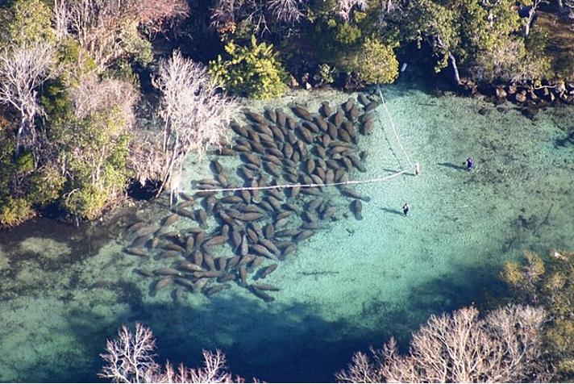
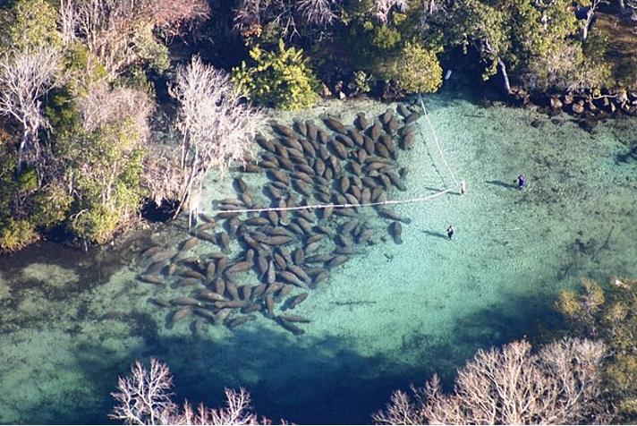

Observations and Fun Facts!
Underwater Cam
LIVE – Watch for Manatees AT THIS MOMENT.
Fun Facts
Manatees are not actually fat! They have only about 3% body fat. Their rounded shape comes from large lungs and their extensive digestive tract.
 When manatees swim they create oval shaped ripples referred to as footprints. This is a great way to spot manatees, especially since they camouflage so well with their surroundings.
When manatees swim they create oval shaped ripples referred to as footprints. This is a great way to spot manatees, especially since they camouflage so well with their surroundings.
 While people may see many manatees gathered at winter warm water refuges during winter months, during the rest of the year manatees are semi-social as they travel around the state’s waterways in search of food, mates, or places to rest. Except for mother(cow)/calf pairs, manatees do not need to travel together although they do socialize when other manatees are encountered.

While people may see many manatees gathered at winter warm water refuges during winter months, during the rest of the year manatees are semi-social as they travel around the state’s waterways in search of food, mates, or places to rest. Except for mother(cow)/calf pairs, manatees do not need to travel together although they do socialize when other manatees are encountered.

Manatees are distant relatives of elephants. Both manatees and elephants have tough skin, bristle-like hair covering their entire body, teeth that are continuously being replaced and toe nails on each forelimb. Also, the end of an elephant's trunk is prehensile for grabbing things, just like the lips of a manatee.
Manatees might not look like mermaids to us, but many years ago sailors mistook manatees for legendary mermaids.
Site Sources
https://dolphins.org/manatee_factsheet
https://www.britannica.com/animal/manatee
https://myfwc.com/wildlifehabitats/profiles/mammals/aquatic/florida-manatee/
Pexels
Wikimedia
https://www.discovercrystalriverfl.com/blog/manatee-guide/
https://blog.mares.com/crystal-river-12746.html